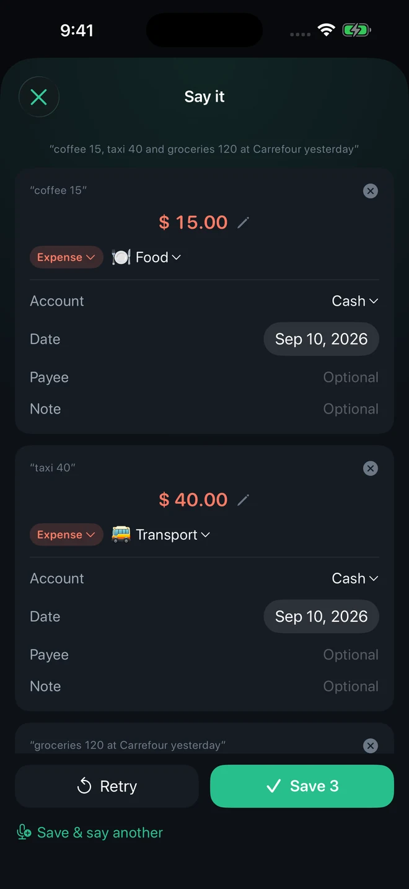

FEATURE · SAY IT · 10 FREE A MONTH
Log expenses by voice. Several at once.
Say it turns a sentence like “coffee 15, taxi 40 and groceries 120 at the supermarket yesterday” into three separate drafts — amount, category, payee and date filled in — that you check and save with one tap. It works in English, Arabic, German, Spanish and Portuguese, and speech is processed on your iPhone or iPad.


Real app screens with example records.
How it works
- Tap Say. From the Transactions screen, the app icon (touch and hold it, then Say an expense), the Quick Add widget, the Lock Screen or Control Center (iOS 18 and later).
- Talk normally. As you speak, chips show what was understood — amount, category, date, payee — so a missing number is obvious while it still costs nothing to repeat it.
- Pause. Recording stops on its own after a short pause; a ring shows the pause closing. No need to tap Done.
- Review and save. Each purchase becomes a card you can edit. Save them all, or use “Save & say another” to log the next receipt in the same sitting.
Pick the language you speak
The language line on the listening screen is a menu. It starts on the app’s language, and you can switch to another of the five the app reads, or to another language your iPhone can hear. So you can speak German to an app set to English. The choice is kept on the device.
What it understands
- Lists, with or without pauses: “coffee 15, taxi 40 and lunch 60” becomes three entries, even when the words arrive without commas; “spent 45 on groceries and fuel” stays one.
- Prices the way you say them: “two pounds eighty”, “45 dollars and 50 cents”, “5 thousand rent”, “two and a half thousand”, and in Spanish “45 con 50”.
- “Twelve fifty” fixed in one tap: when a price said short is heard as 1250, the draft offers 12.50 beside it. If that category has never cost anything near 1250, it opens on 12.50, says why, and one tap takes it back.
- Shops you know: “Starbucks 22” fills the shop and its category for well-known brands.
- Dates: today, yesterday, “3 days ago”, “on the 25th”, “rent on November 1st”.
- Accounts: “with the credit card”, “cash” — and “moved 500 from cash to main bank” becomes a transfer.
- Quantities: “3 coffees at 15 each”, “hotel 1200 for 2 nights”.
- Income: “salary 12,500” is recorded as money coming in.
- Notes: “… note for the office party” keeps the note separate from the shop name.
- Your habits: if you always file Carrefour under Groceries on your card, a new Carrefour entry suggests the same — marked as remembered, not heard.
Languages and devices
Say it uses Apple’s on-device speech recognition for the language you pick, where your device has it. The app’s own rules then read the sentence in English, Arabic, German, Spanish and Portuguese, numbers and all. On devices with Apple Intelligence, Apple’s on-device model can suggest a category for a purchase the rules couldn’t file, and the card says the category is a suggestion to check. Audio is never uploaded by the app, and every result is a draft you confirm.
A price in another currency gets a currency and a rate row on its card, prefilled from the last rate you used, so it converts into your main currency. More in the voice entry guide.
Free or Pro
Free includes 10 saved voice entries per calendar month on each device; each purchase you save counts as one, so a sentence with three purchases uses three. Pro makes Say it unlimited. Typing, templates and pasting a bank message stay free and unlimited.
Questions
Is the voice processed in the cloud?
No. TrackExpenses requires on-device speech recognition and does not upload your audio. Results are drafts you review before anything is saved.
Can I say several expenses in one sentence?
Yes. Separate them naturally with commas or “and”, or just keep talking. Each purchase becomes its own draft, and a date or account said once can apply to the whole list.
Which languages does Say it understand?
The app reads English, Arabic, German, Spanish and Portuguese. Pick the language on the listening screen; it starts on the app’s language. Speech recognition depends on the languages Apple supports on your device.
What if it hears twelve fifty as 1250?
The draft offers the other reading, such as 12.50, with one tap. If that category has never cost anything near 1250, the draft opens on 12.50, says why, and one tap takes it back.
Does it work in Arabic?
Yes. Arabic sentences are read by the built-in rules, including Arabic number words, category words, accounts and day words such as yesterday. The app itself is in English, Arabic, German, Spanish and Portuguese, with a right-to-left Arabic layout.
What happens if a price is in another currency?
The draft shows the currency and a rate field prefilled from the last rate you used, so the entry converts correctly into your main currency.
Your money, easier to follow.
Expense Tracker: SMS & Voice for iPhone, iPad and Mac.
5.0 on the App Store · 10 ratings across 7 countries · Checked 2026-11-21
App facts and free / Pro limits
Expense Tracker: SMS & Voice (TrackExpenses) is made by Mohamed Elatabany for iPhone and iPad with iOS/iPadOS 17 or later, and runs on Mac computers with Apple silicon. The app is in English, Arabic, German, Spanish and Brazilian Portuguese, with a full right-to-left Arabic interface. No app account or bank login is required. Optional Shortcuts automations import supported bank SMS, bank email alerts (through Apple’s Mail app) and Wallet purchases, and a bank SMS or email can be pasted; the app does not read your Messages inbox or your email. Voice entry creates on-device drafts on compatible devices and languages. The free ledger includes unlimited manual transactions, budgets, current-period budget moves and Cover with the total unchanged, days left and spent/left amounts, budget alerts (at 80% when ahead of pace, and when over), bill reminders the morning before a repeating expense is due, historical stats, search with Spent and Income totals across every period, private iCloud sync across iPhone, iPad and Mac, 3 accounts, 2 recurring rules, 10 saved voice entries per calendar month per device and 10 successful automatic bank SMS or email imports per calendar month per device. Touching and holding the app icon offers Say an expense, New expense, Paste bank message and Ask your coach. The money coach reads the last budget month and suggests one limit. Today’s spending, a category, account balances, any named month, charts, files and typed logging are worked out on the device without using a question; open questions go to Anthropic’s Claude through the developer’s relay only after the user agrees, with the conversation so far, a summary of this month and last month and, when the model asks, totals for up to 13 months or up to 20 purchases with their date, shop, category and amount; never notes, receipts, account names or numbers, or balances (10 a month free per device). SMS alerts past the free allowance are kept but locked outside totals; upgrading to Pro adds them all, otherwise the next calendar month’s allowance releases as many as it covers. Nothing is dropped and saved history is never locked; when Pro or a trial ends, entries, accounts and repeating bills keep working. Pro adds unlimited voice entry, SMS and email imports, accounts and recurring rules, money coach challenges and more coach questions, a salary plan, forecasts, overall and per-budget daily guidance with repeating bills accounted for first, a daily budget for chosen categories optionally up to a date, what-if planning, Export & Share (CSV of any range and the full JSON backup; every export is Pro since 1.15.0), CSV import, backup restore, themes and alternate icons. Monthly and annual subscriptions and a one-time lifetime purchase are available. Spending calculations depend on your records and are not financial advice.